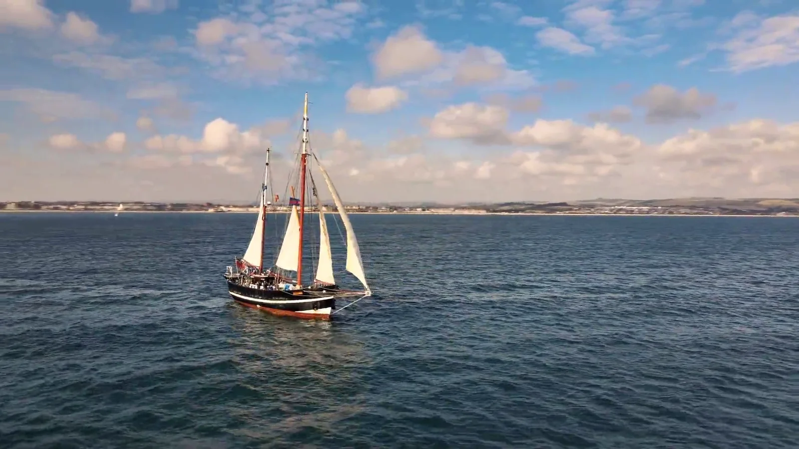

Tracking example clip from the Mavic 3 PRO CINE. Filming the new Honda Civic round the Millbrook proving grounds. Shot in a 4K Log format. Also comes in Apple Pro Res RAW if desired.
DRONE

MAVIC 3 PRO CINE
Off the coast of Weymouth, a ship sailed to sea. Using tracking technology, I’m able to follow subjects with ease, even a mile out.
Watch a year-long double house build come to life in just three minutes! This video captures the incredible transformation from foundation to finish, showcasing the hard work, precision, and dedication behind the project.
Filming the new Honda CRV with the DJI Mavic Air 2. This produces stabilized 4K video, shot in a log format which allows for a deeper colour grade.
Behind the scenes filming the new Honda Civic. From the back of a camera car to flying the skies with the DJI Mavic Pro 3 CINE.